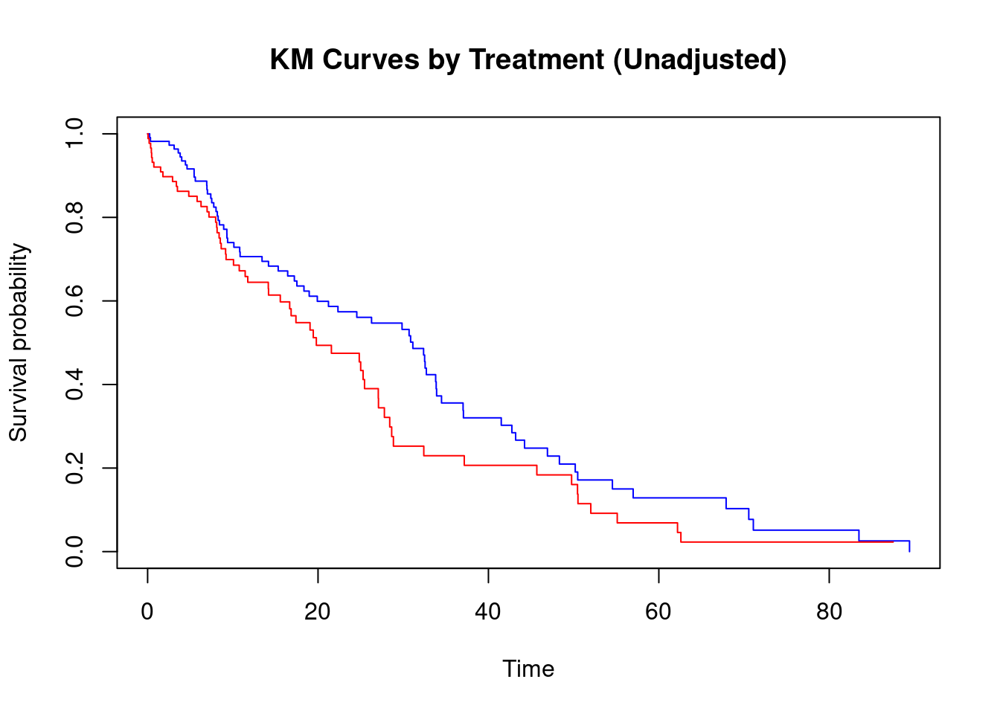

Every causal question has a time dimension. A drug works before a disease progresses. A policy takes effect after a law is passed. A patient’s condition worsens because of a prior decision, which then shapes the next one. Yet for decades, the dominant toolkit of causal inference — regression adjustment, propensity score matching, instrumental variables — was designed for a world without time. These cross-sectional methods assume that a single snapshot of treatment and outcome is sufficient to identify a causal effect. In reality, that assumption fails whenever treatment, confounders, and outcomes co-evolve across time.
Temporal causal inference is the discipline that takes time seriously. It asks not just whether\(X\) causes \(Y\), but when, for how long, under what sequence of exposures, and through what evolving confounding pathways. The answers to these questions require a fundamentally different set of tools: temporal directed acyclic graphs (TDAGs), G-methods, marginal structural models, difference-in-differences with staggered adoption, interrupted time series designs, and longitudinal targeted maximum likelihood estimation.
This introduction chapter is the gateway to Chapter 4. It establishes the vocabulary, intuition, and structural framework needed before any method is applied. The goal is to leave you with three things: a clear understanding of why time breaks standard causal inference, a precise taxonomy of what kinds of temporal data you might encounter, and the ability to state a well-posed causal question in a temporal setting — including the often-neglected but essential step of defining your estimand before touching any data.
Learning Objectives
By the end of this introduction, you will be able to:
Explain the three core ways time breaks standard cross-sectional causal inference: reverse causation, time-varying confounding, and the feedback loop problem
Distinguish between the five main temporal data structures and match each to its primary inferential toolkit
Define and distinguish between point treatment effects, sustained exposure effects, cumulative ATEs, blip effects, and dynamic treatment regime values
Recognize when SUTVA is violated longitudinally and assess its plausibility for a given study
Identify the appropriate class of temporal causal model for a given research scenario
Navigate the R ecosystem for temporal causal inference and select packages purposefully
Setup and Required Packages
Code
packages<-c(# Data infrastructure"tidyverse","tsibble","lubridate","zoo",# Class 1: Time series"vars","tseries","lmtest","urca",# Class 2: ITS / BSTS"CausalImpact","nlme","sandwich","forecast",# Class 3: Panel / DiD"fixest","plm","did","DRDID","bacondecomp","synthdid","Synth",# Class 4: G-methods / TMLE"ipw","WeightIt","geepack","gfoRmula","ltmle","SuperLearner","DTRreg","survey",# Diagnostics"cobalt","EValue")
Standard causal inference methods, regression, propensity score matching, inverse probability weighting, were built around a conceptually simple setup: one treatment, measured once; one outcome, measured once; a set of covariates, measured at baseline. Randomize the treatment, or find a good design that mimics randomization, and you can identify the average treatment effect. This setup is clean, teachable, and powerful, but it is also a static picture of a fundamentally dynamic world.
When data unfold over time, three structural problems emerge that standard cross-sectional methods cannot handle, regardless of how many covariates are available.
The Reverse Causation Problem
In a single cross-section, we observe treatment \(A\) and outcome \(Y\) simultaneously and hope that \(A\) preceded \(Y\). But when both are measured over time, the temporal ordering of treatment and outcome becomes ambiguous or explicitly reversed. Does income affect health, or does health affect income? Do interest rates affect inflation, or does inflation affect interest rates? When feedback is present — when \(Y_t\) causes \(A_{t+1}\), and \(A_t\) causes \(Y_{t+1}\) — the causal question cannot even be cleanly stated without specifying a time horizon and a treatment history.
Time-ordering alone is not sufficient to establish causation, but it is necessary. The Bradford Hill criterion of temporality — that the cause must precede the effect — is the irreducible minimum. Temporal causal inference makes this explicit by indexing every variable by its measurement time, making reverse causation visible rather than hidden.
The Time-Varying Confounding Problem
In a cross-sectional study, a confounder \(L\) is a variable that influences both treatment \(A\) and outcome \(Y\). We adjust for it. Done. In a longitudinal study, confounders are not static — they change over time, responding to both past treatment and past outcome. Blood pressure fluctuates with prior medication use. Employment status shifts with prior earnings and health. Soil nutrient levels change with prior fertilizer applications. These time-varying confounders must be adjusted for at every time point — but doing so with standard regression methods introduces a new problem, described next.
The Feedback Loop Problem
This is the deepest and most consequential failure of standard regression in longitudinal settings. Consider a patient whose disease severity \(L_t\) drives both their current treatment \(A_t\) (physicians increase dose when severity rises) and their future outcome \(Y_{t+1}\) (more severe disease leads to worse outcomes). Two things are simultaneously true:
\(L_t\) is a confounder: it affects both treatment and outcome, so we must adjust for it to remove confounding
\(L_t\) is affected by past treatment\(A_{t-1}\): treating it as a simple covariate in a regression model blocks the indirect causal path \(A_{t-1} \rightarrow L_t \rightarrow Y_{t+1}\)
This is the mediator-confounder dilemma. \(L_t\) simultaneously plays two incompatible roles. Standard regression cannot handle this: adjusting for \(L_t\) removes confounding but also removes part of the treatment effect; not adjusting for \(L_t\) leaves confounding. The bias persists no matter how many other covariates are included. G-methods — the G-formula, marginal structural models, and G-estimation — were developed precisely to resolve this dilemma.
ImportantThe Central Challenge of Longitudinal Causal Inference
When a time-varying covariate \(L_t\) is both (a) influenced by prior treatment \(A_{t-1}\) and (b) a cause of future treatment \(A_t\) and outcome \(Y_{t+1}\), no standard regression specification — however rich — produces an unbiased estimate of the total effect of \(\bar{A}\) on \(Y\). This is not a data limitation; it is a structural impossibility that requires G-methods to resolve.
A Simulation Illustration
To make the feedback loop problem concrete, consider a simple two-period data-generating process:
Code
library(tidyverse)set.seed(42)n<-5000# True causal effect of treatment on outcome: beta = 0.5# Data generating process with time-varying confoundingsim_data<-tibble( id =1:n,# Period 0: baseline confounder and treatment L0 =rnorm(n), A0 =rbinom(n, 1, plogis(0.5*L0)), # L0 -> A0# Period 1: L1 affected by both A0 and L0 (the feedback loop) L1 =0.4*A0+0.6*L0+rnorm(n, sd =0.5), # A0 -> L1 <- L0 A1 =rbinom(n, 1, plogis(0.5*L1-0.3*A0)), # L1 -> A1# Outcome: caused by both treatments and L1 (true beta = 0.5 each) Y =0.5*A0+0.5*A1+0.8*L1+rnorm(n))# Naive regression adjusting for all observed covariatesnaive_ols<-lm(Y~A0+A1+L0+L1, data =sim_data)# True total effect of always-treat vs. never-treat ~ 1.0# Naive OLS estimate: BIASED — adjusting for L1 blocks A0 -> L1 -> Ycat("Naive OLS (A0 coef, should be ~0.5 direct + indirect):\n")
Naive OLS (A0 coef, should be ~0.5 direct + indirect):
# Typically underestimates the total effect because conditioning on L1# removes the A0 -> L1 -> Y path
The naive OLS estimate is biased not because of model misspecification or omitted variables, but because of the structural impossibility described above. G-methods correct this by working with the marginal distribution of the outcome under each treatment regime, rather than conditioning on the post-treatment confounder.
Taxonomy of Temporal Data Structures
Temporal data comes in several fundamentally different structures, each with its own identifying assumptions, estimands, and appropriate methods. One of the most common mistakes in applied temporal causal inference is applying a method designed for one data structure to data that has a different structure. This section provides a definitive taxonomy.
Structure 1: Panel Data (Longitudinal Data)
Definition.\(N\) units (individuals, firms, countries, hospitals) each observed at \(T\) time points, producing an \(N \times T\) grid of observations. The key feature is that the same units are tracked over time, allowing within-unit comparisons.
Notation.\(Y_{it}\), \(A_{it}\), \(L_{it}\) for outcome, treatment, and covariates of unit \(i\) at time \(t\), where \(i = 1, \ldots, N\) and \(t = 1, \ldots, T\).
Identifying feature. Both \(N\) and \(T\) are of non-trivial size. Within-unit variation in treatment is the primary source of causal identification. Unit-specific intercepts (fixed effects) absorb time-invariant unobserved confounders.
Subtypes:
Balanced panel: every unit observed at every time point
Unbalanced panel: some units missing at some time points (common in health data)
Short panel (\(T\) small, \(N\) large): typical in microeconometrics — fixed effects are efficient, but Nickell bias affects dynamic models
Long panel (\(T\) large, \(N\) moderate): typical in macroeconomics — stationarity and cointegration matter
Primary methods. Fixed effects (FE), random effects (RE), Difference-in-Differences (DiD), G-methods (when time-varying confounders are affected by treatment), longitudinal TMLE.
R data formats.
Code
library(plm)library(tidyverse)# Long format (preferred for most methods)panel_long<-tibble( id =rep(1:100, each =5), # unit identifier time =rep(1:5, times =100), # time identifier Y =rnorm(500), # outcome A =rbinom(500, 1, 0.4), # treatment L =rnorm(500)# time-varying covariate)# plm panel data framepanel_df<-pdata.frame(panel_long, index =c("id", "time"))# Wide format (required by ltmle)panel_wide<-panel_long|>pivot_wider(names_from =time, values_from =c(Y, A, L), names_sep ="_t")
Structure 2: Pure Time Series (Single Unit)
Definition. A single unit observed at \(T\) time points, where \(T\) is typically large. There is no cross-sectional variation — all identifying information comes from temporal autocorrelation and the sequencing of events.
Notation.\(Y_t\), \(A_t\) for outcome and treatment at time \(t\), with \(t = 1, \ldots, T\).
Identifying feature. Temporal precedence: past values of \(X\) predict future values of \(Y\) over and above \(Y\)’s own past. Causal identification relies on natural experiments embedded in the time series (e.g., policy changes, exogenous shocks) or on stationarity and Granger-type assumptions.
Key challenge. Without a control unit or counterfactual time series, the only counterfactual is the extrapolated pre-intervention trend — which must be argued to be credible.
Primary methods. Granger causality, Vector Autoregression (VAR), Interrupted Time Series (ITS), Bayesian Structural Time Series (CausalImpact).
R data formats.
Code
library(tsibble)library(lubridate)# tsibble: tidy time series formatts_data<-tsibble( date =seq(as.Date("2015-01-01"), by ="month", length.out =96), Y =cumsum(rnorm(96))+100, A =c(rep(0, 60), rep(1, 36)), # intervention at month 61 index =date)# Base R ts object (for vars, forecast)y_ts<-ts(ts_data$Y, start =c(2015, 1), frequency =12)
Structure 3: Repeated Cross-Sections
Definition. Different random samples are drawn from the same population at multiple time points. Unlike panel data, individual units are not tracked — the composition of the sample changes at each wave.
Notation.\(Y_{it}\), \(A_{it}\) where \(i\) indexes a unit in the sample at time \(t\), but unit \(i\) at time \(t=1\) is a different person from unit \(i\) at time \(t=2\).
Identifying feature. Group-level variation in treatment, combined with temporal variation in when treatment occurred. Causal identification requires that the group-time cells are comparable in the absence of treatment — the parallel trends assumption.
Distinguishing from panel data. In a panel, the same person is observed at multiple times; within-person change is observable. In repeated cross-sections, only aggregate group trends are observable; individual-level change is unobserved.
Primary methods. Difference-in-Differences (using group × time cell means), synthetic control (using aggregate-level data).
Example. Annual household surveys where a subset of states enacts a minimum wage increase. Different households are sampled each year; the DiD compares wage trends in treated vs. control states across survey waves.
Code
# Repeated cross-sections DiD structurerc_data<-tibble( year =rep(c(2015, 2016, 2017, 2018), each =500), state =sample(c("treated", "control"), 2000, replace =TRUE),# Note: 'id' here is a survey respondent, NOT the same person across years Y =rnorm(2000, mean =ifelse(state=="treated"&year>=2017, 1.5, 0)))
Structure 4: Event-Driven / Survival Data
Definition. Units are followed from a well-defined entry time until either an event of interest occurs (death, recovery, job loss, machine failure) or observation ends (censoring). The outcome is time until the event, not a continuously measured response.
Notation.\(T_i\) = event time for unit \(i\); \(\Delta_i\) = event indicator (1 if event observed, 0 if censored); \(A_i(t)\) = treatment at time \(t\) (may be time-varying).
Key causal challenges:
Censoring may be informative (sicker patients drop out), violating the standard assumption that censoring is independent of the outcome process
Time-varying treatments create the feedback loop problem: treatment is adjusted as the patient’s condition evolves
The hazard ratio estimated by a Cox model is an association measure, not a causal effect — it requires additional assumptions to carry a causal interpretation
Primary methods. Marginal structural models with IPTW for censoring (ipw, ltmle), G-formula for survival outcomes, structural accelerated failure time models.
Code
library(survival)# Basic survival data structuresurv_data<-tibble( id =1:200, time =rexp(200, rate =0.05), # time to event event =rbinom(200, 1, 0.7), # 1 = event, 0 = censored A =rbinom(200, 1, 0.5), # binary treatment L =rnorm(200)# baseline confounder)# Kaplan-Meier by treatment group (descriptive, not causal)km_fit<-survfit(Surv(time, event)~A, data =surv_data)plot(km_fit, col =c("blue", "red"), xlab ="Time", ylab ="Survival probability", main ="KM Curves by Treatment (Unadjusted)")

Structure 5: Interrupted Time Series (ITS)
Definition. A specific quasi-experimental design — not merely a data structure — in which an aggregate unit (a hospital, a city, a country) is observed for many time points, and an intervention (a policy change, a law, a natural disaster) occurs at a known calendar time \(T^*\). The pre-intervention trend serves as the counterfactual.
Notation.\(Y_t\) for the aggregate outcome at time \(t\); \(D_t = \mathbf{1}[t \geq T^*]\) for the post-intervention indicator.
Distinguishing features. Unlike panel data, there is typically only one treated unit (or a small aggregate). Unlike pure time series, the intervention is a sharp, known change point rather than a gradual shift. Unlike a DiD, there may be no natural control group — the counterfactual is the extrapolated pre-trend.
Primary methods. Segmented regression, GLS with AR(1) errors, ARIMA intervention models, Bayesian structural time series (CausalImpact), comparative ITS (CITS) with a control series.
NoteSummary: Choosing the Right Data Structure
Before applying any method, classify your data:
Same units tracked over time, both N and T matter? → Panel data
Single unit, long time series, natural experiment embedded? → Pure time series / ITS
Different samples at each wave, group-level treatment? → Repeated cross-sections
Following until an event occurs, censoring present? → Survival / event-driven
Single aggregate unit, known policy change date, pre-trend as counterfactual? → ITS design
The data structure determines the class of methods available. Misclassifying your data structure is one of the most common sources of invalid causal inference in applied temporal research.
Comparative Overview
Feature
Panel
Time Series
Repeated Cross-Sections
Survival
ITS
Same units tracked?
✓
✓ (1 unit)
✗
✓
✓ (aggregate)
\(N\) large?
✓
✗
✓
✓
Usually ✗
\(T\) large?
Sometimes
✓
Sometimes
Varies
✓
Counterfactual source
Within-unit change
Pre-trend / shock
Group × time cells
Untreated units
Pre-trend
Key assumption
Sequential ignorability or parallel trends
Stationarity + no concurrent events
Parallel trends
Non-informative censoring
Trend continuity
Primary R packages
plm, ltmle, did
vars, CausalImpact
did, fixest
survival, ltmle
CausalImpact, nlme
Temporal Causal Estimands
A causal estimand is a precise mathematical statement of what causal quantity you are trying to estimate. In cross-sectional settings, the estimand is typically the ATE: \(\mathbb{E}[Y(1) - Y(0)]\). In temporal settings, the choice of estimand is far richer — and far more consequential. Different estimands correspond to different interventions, answer different policy questions, and require different identification assumptions.
This section defines the full hierarchy of temporal estimands, from the simplest extension of the ATE to the most nuanced blip-level decomposition.
Point Treatment Effect at a Fixed Time
The simplest temporal extension: treatment is administered once (at a baseline), and the outcome is measured at a later time \(t\).
This is still a single-intervention estimand, but it makes explicit that the outcome is measured \(t\) periods after the treatment. It answers: “What is the average effect of a single treatment administered at baseline on the outcome \(t\) periods later?”
Complications. Even for a single baseline treatment, intermediate outcomes and confounders may change between \(t = 0\) and the outcome measurement. If these intermediates are caused by treatment, adjusting for them induces post-treatment bias.
Average Treatment Effect at Each Time Point
When treatment is administered (or re-administered) at each period, we can define a time-specific ATE for each \(t\):
where \(\bar{A}_{t-1}\) denotes the history of prior treatments. This answers: “What is the average effect of receiving treatment at time \(t\), conditional on the prior treatment history?”
Note.\(\text{ATE}_t\) can vary across time — effects may grow, decay, or be non-monotone. Plotting \(\text{ATE}_t\) as a function of \(t\) is an event-study plot (used in DiD) or an impulse response function (used in VAR).
Cumulative Average Treatment Effect
Rather than isolating the effect at a single time point, the cumulative ATE averages over the entire follow-up period:
where \(\bar{1} = (1, 1, \ldots, 1)\) (always treat) and \(\bar{0} = (0, 0, \ldots, 0)\) (never treat).
This answers: “On average across the follow-up period, what is the difference in outcomes between a world where everyone always received treatment versus a world where no one ever did?”
Applications. Commonly used in pharmacoepidemiology to compare sustained treatment strategies (e.g., always use a statin vs. never use), and in economics to measure the average effect of a sustained policy over its lifetime.
Marginal Structural Model Estimand
The estimand targeted by Marginal Structural Models (MSMs) compares expected outcomes under two specified treatment regimes — fixed sequences of treatments across all time points:
\[
\mathbb{E}[Y_T(\bar{a})] \text{ vs. } \mathbb{E}[Y_T(\bar{a}')]
\]
where \(\bar{a} = (a_0, a_1, \ldots, a_{T-1})\) is a treatment sequence. The MSM estimand is:
The most common comparison is always-treat vs. never-treat. More interesting comparisons involve dynamic regimes like “treat for the first three periods, then stop” vs. “treat continuously.”
Blip Effects (Direct Temporal Effect)
The blip effect at time \(t\) is the effect of receiving treatment at time \(t\)only — receiving no treatment at any time point before or after \(t\) — compared to not receiving it at time \(t\):
where \(\bar{H}_t = (\bar{L}_t, \bar{A}_{t-1})\) is the full covariate-treatment history up to \(t\), and \(\bar{0}\) means no treatment from \(t+1\) onward.
Interpretation. The blip effect decomposes the total treatment effect into time-specific contributions. It answers: “How much did receiving treatment at time \(t\) specifically contribute to the final outcome, given the history up to that point, and holding future treatment at zero?”
Why blip effects matter. If you want to know when to treat a patient optimally — not just whether to treat at all — blip effects are the right estimand. They are the target of G-estimation of structural nested models and underlie the theory of dynamic treatment regimes.
NoteBlip Effects vs. Time-Specific ATEs
A time-specific ATE \(\text{ATE}_t\) asks: “What is the effect of switching \(A_t\) from 0 to 1, averaging over possible future treatments?” A blip effect \(\gamma_t(\bar{h}_t)\) asks: “What is the effect of \(A_t = 1\) if no further treatment is received?” The difference is the future treatment protocol that is held fixed. Blip effects are more useful for understanding the mechanism of treatment timing; ATEs are more useful for evaluating population-average policies.
Dynamic Treatment Regime Value
A dynamic treatment regime (DTR) is a decision rule \(d = (d_0, d_1, \ldots, d_{T-1})\) where each \(d_t(\bar{H}_t)\) maps a patient’s full history to a treatment decision at time \(t\). The value of a DTR is:
Example. A DTR for diabetes management: “Start insulin when HbA1c exceeds 7%; reduce dose when HbA1c falls below 6.5%.” The value of this DTR is the expected outcome (e.g., expected HbA1c at 2 years) under this adaptive rule, applied to the population.
Optimal DTR. The optimal DTR \(d^*\) is the one that maximizes \(V(d)\) over all possible decision rules. Finding \(d^*\) is the goal of optimal dynamic treatment regime estimation — a bridge between causal inference and reinforcement learning.
Comparing Estimands: A Summary
Estimand
What it measures
Best use case
Primary method
\(\text{ATE}_{0 \to t}\)
Single treatment, delayed outcome
Point exposure studies
Regression, IPW
\(\text{ATE}_t\)
Treatment effect at one time point
Event studies, IRFs
DiD, VAR
\(\text{ATE}_{\text{cum}}\)
Average effect over sustained exposure
Policy lifetime evaluation
MSM, G-formula
MSM-ATE
Comparing two sustained regimes
Pharmacoepidemiology
MSM / IPTW
Blip effect \(\gamma_t\)
Contribution of treatment at time \(t\) only
Treatment timing / mechanism
G-estimation
DTR value \(V(d)\)
Expected outcome under an adaptive rule
Personalized treatment optimization
ltmle, DTRreg
Types of Temporal Causal Models
The landscape of temporal causal models can be organized along two axes: (1) whether the model is design-based (exploiting a natural experiment) or model-based (relying on explicit parametric or semiparametric assumptions about the data-generating process); and (2) whether the primary data structure is a time series / ITS (aggregate, single- or few-unit) or a panel / longitudinal cohort (many units over time).
This organization produces four broad classes of temporal causal models, each covering a distinct inferential territory.
Class 1: Time-Series Causal Models (Design-Agnostic)
These models characterize predictive and structural relationships within a multivariate time series, relying on temporal ordering and autocorrelation structure rather than a natural experiment.
Granger Causality / Vector Autoregression (VAR). Tests whether past values of \(X\) improve prediction of \(Y\) beyond \(Y\)’s own past. The VAR model formalizes this within a system of lagged linear equations. Output: Granger causality F-tests, impulse response functions (IRFs), forecast error variance decompositions (FEVDs). Key limitation: Granger causality is predictive, not structural — a lurking common cause can produce Granger causality without structural causation.
Structural VAR (SVAR). Extends VAR by imposing structural restrictions (e.g., short-run zero restrictions, long-run restrictions) to identify causal shocks. The Choleski decomposition is the most common identification strategy, imposing a recursive causal ordering. More ambitious approaches use instrumental variables or sign restrictions. SVARs are the backbone of empirical macroeconomics.
Cointegration and Error Correction Models (ECM). When two non-stationary time series share a long-run equilibrium relationship (cointegration), an error correction model decomposes the causal dynamics into short-run adjustments and long-run equilibrium restoration. The Engle-Granger two-step procedure and Johansen test identify cointegrating relationships.
Class 2: Interrupted Time Series / Quasi-Experimental Time-Series Models
These models exploit a known, externally imposed break point in an aggregate time series to estimate the causal effect of a policy or intervention.
Segmented Regression (ITS). Fits separate linear trends before and after the intervention, estimating a level change (\(\beta_2\)) and slope change (\(\beta_3\)) at the breakpoint. The pre-intervention trend is the counterfactual. Requires corrections for autocorrelation (GLS, Newey-West) and seasonal patterns (Fourier terms, monthly dummies).
Bayesian Structural Time Series (BSTS / CausalImpact). The CausalImpact package (Brodersen et al., 2015) fits a state-space model to the pre-intervention period, extrapolates the counterfactual trend forward, and computes the posterior distribution of the causal effect as the difference between observed and predicted values. Automatically handles trend, seasonality, and covariate regression.
Comparative ITS (CITS) / Difference-in-Discontinuities. Adds a control series to the standard ITS, comparing the breakpoint discontinuity in the treated series to any discontinuity in the control series. This accounts for concurrent secular trends that would otherwise be confounded with the intervention effect.
Class 3: Panel and Quasi-Experimental Comparative Methods
These models exploit variation across multiple units and time periods, using control units to construct the counterfactual for treated units.
Difference-in-Differences (DiD). Compares the change in outcomes over time for a treated group to the change for a control group. The parallel trends assumption — that in the absence of treatment, both groups would have followed the same trajectory — is the key identification condition. The two-way fixed effects (TWFE) model is the standard workhorse; for staggered adoption, cohort-based estimators (Callaway-Sant’Anna, Sun-Abraham) are preferred.
Fixed Effects (FE) and Random Effects (RE). Unit fixed effects control for all time-invariant unobserved heterogeneity within each unit. Two-way FE additionally removes common time shocks. The Hausman test adjudicates between FE and RE. Dynamic FE models with lagged dependent variables require GMM correction (Arellano-Bond) to remove the Nickell bias.
Synthetic Control. For settings with one treated unit (a country, a state, a firm), a weighted combination of control units is constructed to match the treated unit’s pre-intervention trajectory. Causal inference is via permutation tests: how does the treated unit’s post-period divergence compare to the synthetic controls for each donor unit?
Regression Discontinuity in Time (RDiT). A special case of RDD where the running variable is calendar time and the threshold is the implementation date of a policy. Units just before and after the threshold are compared. Requires that no other changes occur precisely at the threshold date.
Class 4: Longitudinal Causal Methods (G-Methods and TMLE)
These are the most statistically powerful and assumption-demanding methods. They handle the feedback loop problem — time-varying confounders affected by prior treatment — which Class 1–3 methods cannot.
G-Computation (Parametric G-Formula). Estimates the counterfactual mean under a specified treatment regime by fitting models for each time-specific outcome and confounder distribution, then simulating outcomes under the target regime (Monte Carlo). Fully parametric; sensitive to model misspecification; extremely flexible for comparing arbitrary treatment regimes and dynamic rules.
Marginal Structural Models (MSMs) with IPTW. Creates a pseudo-population free of time-varying confounding by reweighting observations by the inverse probability of their observed treatment history. The MSM is then fit as a weighted regression. Stabilized weights reduce variance. Requires positivity (non-zero probability of any treatment at every time, for every covariate history).
G-Estimation of Structural Nested Models (SNMs). Estimates blip effects directly by exploiting the conditional independence between the blipped-down outcome and treatment given history, under sequential ignorability. Semi-parametric and computationally efficient; avoids modeling the full confounder distribution.
Longitudinal TMLE (ltmle). The state-of-the-art semiparametric estimator for longitudinal causal effects. Combines the G-computation estimand with a targeting step (fluctuation of the initial estimate) that achieves semiparametric efficiency and doubly robust consistency. Fully compatible with machine learning nuisance function estimation via SuperLearner.
Summary: Temporal Model Taxonomy
Class
Data Structure
Key Assumption
Representative Methods
R Packages
1. Time-Series
Single unit, long \(T\)
Stationarity, no omitted common causes
Granger, VAR, SVAR, ECM
vars, urca
2. ITS / Quasi-Exp.
Aggregate unit, policy break
Trend continuity, no concurrent events
Segmented regression, BSTS, CITS
CausalImpact, nlme
3. Panel / Comparative
\(N\) units, \(T\) periods
Parallel trends, sequential ignorability (no feedback)
DiD, FE, Synthetic Control
did, fixest, plm, Synth
4. Longitudinal / G-Methods
\(N\) units, \(T\) periods, feedback confounding
Sequential ignorability + positivity
G-formula, MSM, G-estimation, ltmle
gfoRmula, ipw, ltmle
TipChoosing a Model Class
Work through this decision sequence:
Is your data a single aggregate unit with a known intervention date? → Class 2 (ITS)
Do you have multiple units and are you comparing treated to control groups over time? → Class 3 (DiD / Panel)
Do you have time-varying confounders that are affected by prior treatment? → Class 4 (G-methods) — even if your data also fits Class 3, standard panel methods are biased
Do you have a long time series and want to characterize dynamic interdependencies? → Class 1 (VAR/Granger)
Key Assumptions in Temporal Causal Inference
Every temporal causal model rests on a set of identification assumptions. These assumptions are never testable from data alone — they must be defended on substantive grounds. This section catalogs the most important assumptions, their formal statement, and how to evaluate their plausibility.
The longitudinal extension of the standard unconfoundedness assumption. At each time point \(t\), the treatment \(A_t\) is as-good-as-random given the full observed history up to \(t\):
This requires that all variables that predict both treatment at time \(t\) and future outcomes are measured and included in \(\bar{L}_t\). Unmeasured time-varying confounders — variables that predict both the physician’s treatment decision and the patient’s future outcome, but are not recorded — violate sequential ignorability.
Evaluation. Justify from subject-matter knowledge. Draw the temporal DAG and ask: is every arrow into \(A_t\) from a variable that also points toward \(Y_T\) accounted for in \(\bar{L}_t\)? Conduct sensitivity analyses (E-values, bounding) to assess how severe unmeasured confounding would need to be to overturn your conclusions.
Positivity (Overlap in Longitudinal Settings)
Every combination of treatment history and covariate history that occurs in the data must have non-zero probability of receiving any treatment value at the next time point:
Violation. Positivity is violated when certain covariate histories make one treatment value structurally impossible (e.g., patients with certain diagnoses are never given a particular drug). Severe positivity violations produce extreme IPTW weights, inflating variance and potentially introducing bias if weights are trimmed.
Diagnosis. Plot the distribution of stabilized IPTW weights. Values above 10–20 signal positivity concerns. Trim weights at a specified quantile and check sensitivity of results to the trimming threshold.
Consistency
The observed outcome for a unit equals the potential outcome under the treatment they actually received:
In longitudinal settings, consistency requires that the treatment is well-defined at every time point — there are no hidden versions of treatment, and the mechanism of delivery does not itself affect the outcome. This is linked to SUTVA (see below).
SUTVA in Longitudinal Settings
The Stable Unit Treatment Value Assumption has two components in longitudinal data:
No interference across units. Unit \(i\)’s potential outcomes do not depend on the treatment received by unit \(j \neq i\), at any time point. This assumption can fail due to geographic spillovers (a policy in one region affects neighboring regions), social network effects (a treated individual influences their social contacts), or market equilibrium effects (a large policy changes equilibrium prices for everyone).
No carryover (no hidden versions of treatment) within units. The effect of treatment at time \(t\) does not persist beyond what is captured by the observed mediators and outcomes at subsequent time points. Carryover effects — where the physical or psychological residue of past treatment creates hidden variation in “the same” treatment administered later — violate consistency.
Assessment. Ask whether: (1) treated units could plausibly influence control units through geographic proximity, social ties, or market mechanisms; (2) the treatment has well-known carryover pharmacological or psychological effects; (3) compliance or treatment intensity varies in unmeasured ways across time.
Parallel Trends (DiD-Specific)
In the absence of treatment, treated and control groups would have followed the same outcome trajectory:
\[
\mathbb{E}[Y_{it}(0) - Y_{i,t-1}(0)] \text{ is identical for treated and control groups, } \forall t
\]
This is an assumption about counterfactual trends — it can never be directly verified. It can be tested in pre-treatment periods (a necessary but not sufficient condition), and its sensitivity can be assessed using the Rambachan-Roth bounding approach.
Trend Continuity (ITS-Specific)
The pre-intervention trend would have continued unchanged in the absence of the intervention. This is the identifying assumption of ITS analysis and is violated if: (1) a concurrent event occurred at the same time as the intervention; (2) the outcome was trending toward its natural ceiling or floor (ceiling/floor effects); or (3) regression to the mean influences the post-period trajectory.
R Packages for Temporal Causal Inference
R has a mature and actively developing ecosystem for temporal causal inference. The table below organizes the key packages by methodological category, with brief notes on their scope and primary use case.
Data Infrastructure
Package
Purpose
Key Functions
tsibble
Tidy time series data frames with explicit temporal index
Applied temporal causal inference is as much a process as a method. Before writing a single line of R code, the following steps should be completed:
Step 1: Classify your data structure. Use the taxonomy in Section 4.0.2. This determines which model classes are available.
Step 2: Draw your temporal DAG. Use dagitty to encode the assumed causal relationships among all variables at each time point. Identify confounders, mediators, and colliders. Determine whether any confounder is affected by prior treatment — if so, G-methods are required.
Step 3: Define your estimand precisely. Which of the estimands in Section 4.0.3 answers your research question? Write it as a mathematical expression before any analysis. A vague estimand leads to a vague interpretation.
Step 4: State and defend your identification assumptions. Which assumptions are required? Which are most vulnerable? How can you assess their plausibility from the data or domain knowledge?
Step 5: Choose your estimator. Given your data structure, DAG, estimand, and assumptions, select the appropriate method from the taxonomy in Section 4.0.4.
Step 6: Conduct primary analysis with diagnostics. Fit the chosen model, check balance (for weighting methods), check autocorrelation (for time-series methods), and produce the primary estimate with confidence intervals.
Step 7: Sensitivity analysis. How fragile is your conclusion? Apply the appropriate sensitivity methods (E-values, Rambachan-Roth, weight trimming).
Step 8: Report transparently. State your estimand, assumptions, method, and diagnostics. Report point estimates and confidence intervals. Flag assumptions that are especially uncertain.
TipThe Single Most Important Step
Draw the temporal DAG before choosing a method. The DAG determines whether standard panel methods are valid or G-methods are required — a decision that cannot be recovered post hoc from the data. Skipping the DAG step is the most common cause of structurally invalid temporal causal analyses.
Summary and Conclusion
Temporal causal inference is not merely an extension of cross-sectional methods — it is a qualitatively different enterprise. The feedback between treatment, confounders, and outcomes over time creates structural identification problems that more data, better software, or fancier models cannot solve without the right conceptual framework.
The key messages of this introduction are:
On why time matters. Three structural problems distinguish temporal from cross-sectional causal inference: reverse causation (the outcome may cause the treatment), time-varying confounding (confounders change over time), and the feedback loop problem (confounders are affected by prior treatment, making standard regression structurally biased regardless of the covariate set). G-methods resolve the third problem by targeting marginal, not conditional, potential outcome means.
On data structures. Panel data (same units, multiple times), pure time series (single unit, long series), repeated cross-sections (different samples, multiple waves), survival data (time to event), and interrupted time series (aggregate, known breakpoint) each have distinct identifying variation and appropriate methods. Misclassifying the data structure leads to applying the wrong inferential framework.
On estimands. The choice of estimand — point ATE, time-specific ATE, cumulative ATE, MSM-ATE, blip effect, or DTR value — is a scientific choice, not a statistical one. Different estimands answer different policy questions, require different assumptions, and correspond to different methods. The estimand must be defined before analysis begins.
On model classes. Four classes of temporal causal models cover the landscape: time-series causal models (Granger, VAR), ITS and quasi-experimental designs (segmented regression, BSTS), panel and comparative methods (DiD, FE, synthetic control), and longitudinal G-methods (G-formula, MSMs, ltmle). Selecting the right class requires classifying your data structure, drawing your temporal DAG, and checking whether the feedback loop problem is present.
On R. R offers a comprehensive and actively maintained ecosystem for temporal causal inference, spanning all four model classes. The packages gfoRmula, ltmle, did, CausalImpact, vars, and fixest represent the state of the art in their respective domains, and all are compatible with tidyverse-style workflows.
Resources
Foundational Texts
Causal Inference: What If – Hernán & Robins (free online at www.hsph.harvard.edu/miguel-hernan/causal-inference-book). Chapters 19–23 cover longitudinal G-methods with exceptional depth and clarity. The gold standard reference for this chapter.
Causal Inference: The Mixtape – Scott Cunningham (free online at mixtape.scunning.com). Excellent coverage of DiD, synthetic control, and panel methods with R and Stata code.
The Effect – Nick Huntington-Klein (free online at theeffectbook.net). Highly accessible treatment of DiD, event studies, and panel data causal inference.
Econometric Analysis of Cross Section and Panel Data – Wooldridge (2nd ed.). The definitive econometrics reference for panel data, FE/RE, and dynamic panel GMM.
Time Series Analysis and Its Applications – Shumway & Stoffer. Rigorous treatment of ARIMA, state-space models, and spectral analysis.
Seminal Papers
Robins (1986) — “A new approach to causal inference in mortality studies with a sustained exposure period.” Mathematical Modelling 7, 1393–1512. The origin of the G-formula.
Robins, Hernán & Brumback (2000) — “Marginal structural models and causal inference in epidemiology.” Epidemiology 11(5), 550–560. The foundational MSM paper.
Callaway & Sant’Anna (2021) — “Difference-in-differences with multiple time periods.” Journal of Econometrics 225(2), 200–230. The did package paper.
Sun & Abraham (2021) — “Estimating dynamic treatment effects in event studies with heterogeneous treatment effects.” Journal of Econometrics 225(2), 175–199.
Rambachan & Roth (2023) — “A more credible approach to parallel trends.” Review of Economic Studies 90(5), 2555–2591. The HonestDiD paper.
Brodersen et al. (2015) — “Inferring causal impact using Bayesian structural time-series models.” Annals of Applied Statistics 9(1), 247–274. The CausalImpact paper.
Abadie, Diamond & Hainmueller (2010) — “Synthetic control methods for comparative case studies.” Journal of the American Statistical Association 105(490), 493–505.
Chernozhukov et al. (2018) — “Double/debiased machine learning for treatment and structural parameters.” Econometrics Journal 21(1), C1–C68.
R Package Vignettes and Documentation
ltmle package vignette: Schwab et al. — comprehensive worked examples with survival and point-treatment outcomes
gfoRmula package vignette: McGrath et al. — detailed guide to the parametric G-formula with gfoRmula
did package documentation: Callaway & Sant’Anna — introductory vignette with replication of the minimum wage example
CausalImpact package documentation and tutorial on the Google open source blog